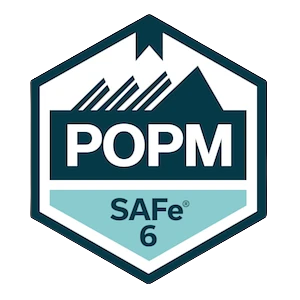
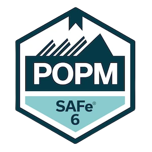

Design Thinking Coach, User Experience Designer, Computer Scientist, Startup-Enthusiast, Speaker, Systemic Organizational Developer in training, Husband, Father of 2 grown up kids & world traveller
I am an accredited BAFA consultant (#163217).
There are numerous funding opportunities from the federal government, the states and the EU.
For example the current program for small and medium-sized businesses
"Digital Jetzt"
My offers are always based on your needs and are as individual as your company and can therefore usually only be made
after a free initial consultation. Larger projects are always offered in phases, after which you may make adjustments or even cancel them.
Book your individual consultation here.
Complete responsibility for your digital transformation initiative as interim Chief Digital Officer
Strategy workshops for problem and potential analysis for digital transformation and creation of a roadmap
Long-term project support - After starting the team, I support the employees with further workshops and methodical support
Topic-specific workshops and support such as agile methods and business model design
Support of startups in the early phase and with scaling through: